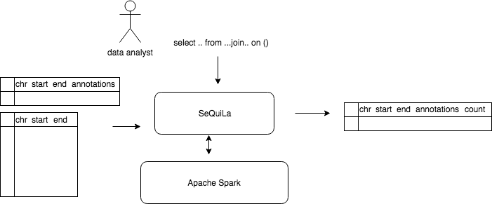

2 Overview¶
2.1 Motivation¶
Motivation for implementing SeQuiLa was providing both elastic, fast and most importantly scalable solution for performing range join queries on genomic datasets. Range joins are bread and butter for NGS analysis but high volume of data make them very slow or even failing to compute.
SeQuiLa is elastic - since it’s SQL queries that are run upon datasets, its fast - due to efficient IntervalTree algorithm usage with additional optimizations and it’s scalable - processing time decreases when run on Spark cluster.
2.2 Solution overview¶
SeQuiLa is running upon Apache Spark execution engine. At high level it allows data analyst to write custom SQL queries that involve range joins on two datasets. Additional strategy injected into Spark guarantees good performance level.
But hey, you don’t need to know Spark or Scala to use SeQuiLa.
SeQuiLa can be easily integrated in your existing processing pipeline. And this is it’s essential feature. Whether you prefer to do your analysis via commandline tools or from spark-shell or only inject efficient range joins into your exisiting Spark or non-Spark application - SeQuiLa is there for you.
For details see: 3 Usage
2.3 Algorithm¶
SeQuiLa’s range joins are based on IntervalTree algorithm.
<TODO> … More on algorithm and optimizations
2.4 Tests¶
2.4.1 Accuracy¶
SeQuiLa’s results were tested for compatibility with GRganges R package. It achieved 100% accuracy rate.
2.4.2 Performance tests¶
During performance testing phase we focused on similar tools as well as compared our strategy against default Spark strategy used for genomic interval queries.
2.5 Repositories¶
You can find SeQuiLa publicly available in following repositories:
| GitHub | https://github.com/ZSI-Bio/bdg-sequila |
| Maven | https://zsibio.ii.pw.edu.pl/nexus/repository/maven-releases/ |
| Docker Hub | https://hub.docker.com/r/biodatageeks/bdg-sequila/ |
| Repo | Link |
|---|---|
| GitHub | https://github.com/ZSI-Bio/bdg-sequila |
| Maven | https://zsibio.ii.pw.edu.pl/nexus/repository/maven-releases/ |
| Docker Hub | https://hub.docker.com/r/biodatageeks/bdg-sequila/ |